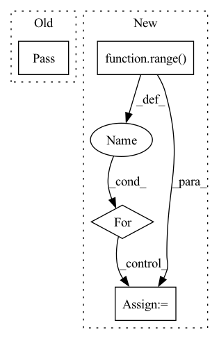

Pattern ID :1984
Before Change
nn.MaxPool2d(return_indices=True, **pool_layer.kwargs)})
def forward(self, x, pool_indices):
pass
class AutoEncoder(nn.Module):
def __init__(self, conv_layers, pool_layers, feature_maker, feature_demaker):After Change
x_current = x
print (pool_indices.keys())
for k_layer in range( self.n_layers):
key = "layer_{}".format(k_layer)
key_inverse = "layer_{}".format(self.n_layers - k_layer - 1)
pool_index = pool_indices[key_inverse]
x_current = self.norms[key](self.convolutions[key](self.pools[key](x_current, pool_index)))
return x_currentIn pattern: SUPERPATTERN
Frequency: 3
Non-data size: 4
Instances Fragment ID: 13675457
Project Name: anderzzz/monkey_caput
Commit Name: 6fc78bd6d8b87ecaa621ccda8d34d5472815c2a9
Time: 2020-10-08
Author: ohrn.anders@gmail.com
File Name: ae_cluster.py
M Class Name: Decoder
N Class Name: Decoder
M Method Name: forward(3)
N Method Name: forward(3)
M Parent Class: nn.Module
N Parent Class: nn.Module
M File Name: ae_cluster.py
N File Name: ae_cluster.py
M Start Line: 115
M End Line: 115
N Start Line: 142
N End Line: 150
Before Change
encoded: torch.Tensor [batch, series, time steps, output embedding dimension]
The encoded embedding for each series and time step.
pass
After Change
data = encoded
for i in range( self.attention_layers):
// Treat the various series as a batch dimension
mod_timesteps = self.layer_timesteps[i]
// [batch, series, time steps, embedding]
data = data.flatten(start_dim=0, end_dim=1)
// [batch * series, time steps, embedding] Fragment ID: 13675446
Project Name: servicenow/tactis
Commit Name: 0ba7dc5856d92dd6b1809b0a34a89bfed9086738
Time: 2022-06-06
Author: etienne.marcotte@servicenow.com
File Name: tactis/model/encoder.py
M Class Name: TemporalEncoder
N Class Name: TemporalEncoder
M Method Name: forward(2)
N Method Name: forward(2)
M Parent Class: nn.Module
N Parent Class: nn.Module
M File Name: tactis/model/encoder.py
N File Name: tactis/model/encoder.py
M Start Line: 157
M End Line: 157
N Start Line: 220
N End Line: 255
Before Change
pass
def forward(self, x):
pass
After Change
return self.model(input)
result = []
down = input
for i in range( self.num_D):
model = getattr(self, "model_%d" % i)
result.append(model(down))
if i != self.num_D - 1:
down = self.down(down) Fragment ID: 13675464
Project Name: lotayou/cocosnet
Commit Name: 3dcf714c258ea399239d1362db5247110f254fd7
Time: 2020-05-24
Author: lotayou@pku.edu.cn
File Name: model/discriminator.py
M Class Name: Discriminator
N Class Name: Discriminator
M Method Name: forward(2)
N Method Name: forward(2)
M Parent Class: nn.Module
N Parent Class: nn.Module
M File Name: model/discriminator.py
N File Name: model/discriminator.py
M Start Line: 12
M End Line: 12
N Start Line: 61
N End Line: 71